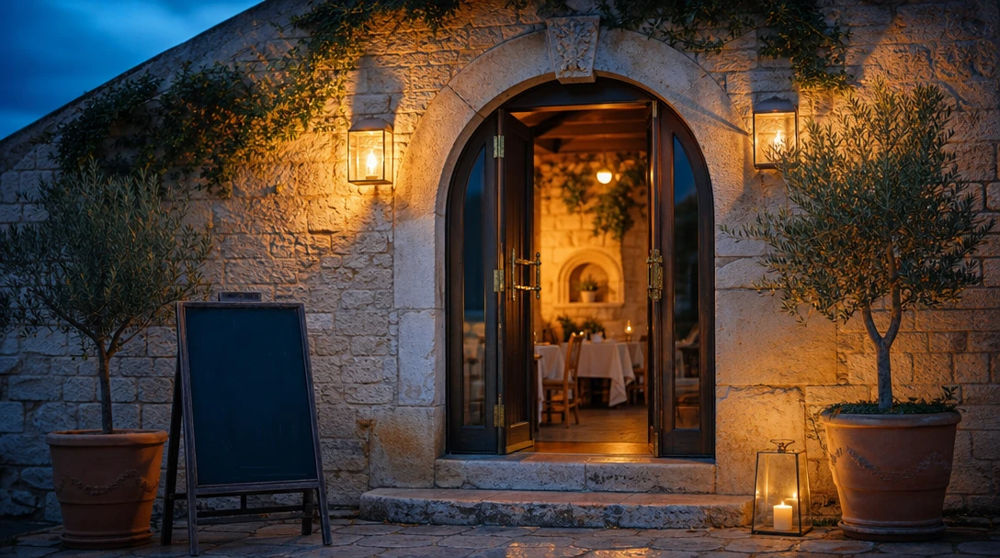
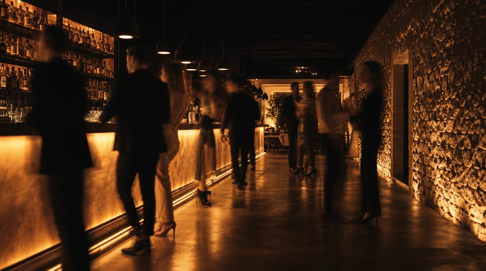
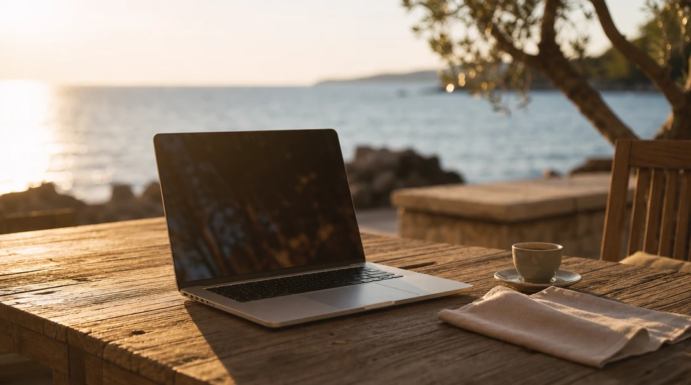
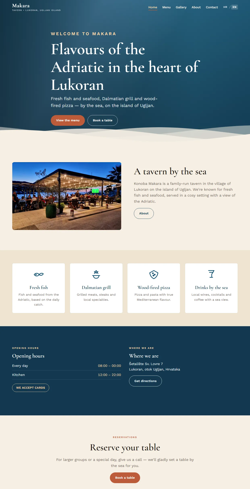
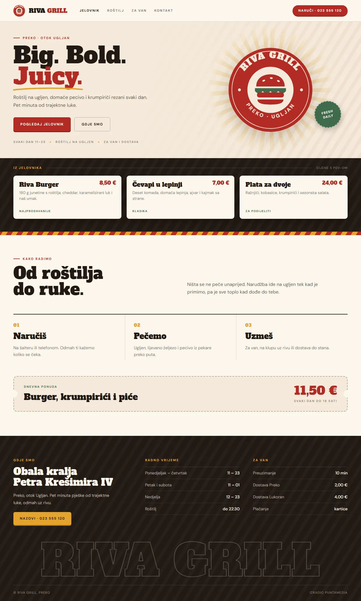
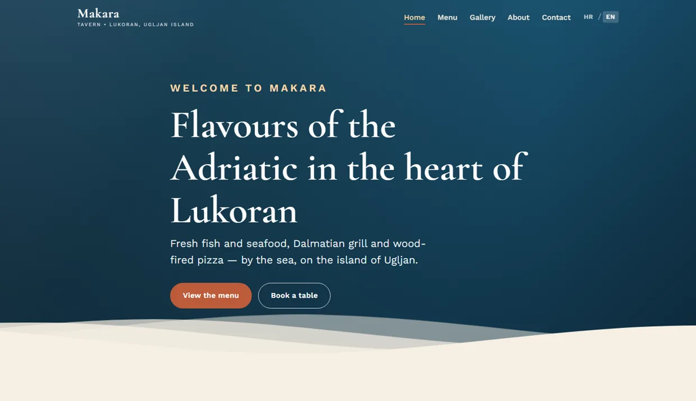

Restaurants & konobas
Menus, the terrace, the story — and a table booked before they arrive.
Puntamedia designs and builds custom, multilingual websites for restaurants, shops and small businesses — in whatever style suits your brand, and built to bring you customers.
Custom, multilingual websites for restaurants, shops and small businesses on the Adriatic.
One partner, from the first conversation to a living site that keeps working for you — in every language your customers speak.
A site built around your story, your colours and your customers — not a layout everyone else is already using.
Croatian, English, German, Italian. Speak to your neighbours and to the travellers finding you for the first time.
Menus, opening hours, directions and reservations — the things guests actually look for, presented beautifully.
Modern tools let me move faster than a traditional agency — so you launch sooner, without anything feeling rushed.
Fast-loading, mobile-first and built to be discovered — so new customers land on your page, not a competitor's.
Menus change, prices change, seasons change. I keep your site current so it never feels forgotten.
Hospitality lives or dies on first impressions. If someone is deciding between you and the place next door, your website is doing that work before they ever walk in.

Menus, the terrace, the story — and a table booked before they arrive.

Atmosphere you can feel from a phone screen, plus tonight's programme.

Rooms, availability and the view — in every language your guests speak.
No mood boards and no slide decks. Scroll, and a page assembles itself: the grid first, then the words, then the voice, then the photographs. This is the actual job, start to finish.
Svježa riba s roštilja, domaće maslinovo ulje i terasa okrenuta zalasku.
A few of the places I've helped get online — each one custom-built, multilingual, and made to win customers.

A warm, seaside identity for a family tavern on Ugljan. Bilingual from the first click, with the menu, the story and the sunset terrace front and centre — so locals and travellers alike know exactly why to book a table.

A playful, retro-diner look for a fast-food spot that wanted personality. Appetite-first visuals, an easy-to-scan menu and clear directions — the kind of page that turns a hungry scroll into a walk-in order.
In the studio right now: a calm, bright site for two apartments a minute from Zadar's old town. Photography first, availability and house rules in four languages, and a booking enquiry that reaches the owner's phone.
Keep scrolling and watch twenty years go by. Same konoba, same menu, same photographs. Only the website changed. When it lands, the handle is yours.

No jargon and no endless meetings. A calm, four-step process that keeps you in the loop the whole way.
We talk about your business, your guests, and what a great site would actually do for you.
I craft a look that fits your brand and show you a real, working preview — not a rough sketch.
The full site comes together in every language you need, fast-loading and mobile-first.
We go live on your own domain, and I stay on to keep everything fresh and running.
You'll get a fixed quote before anything starts. No hourly billing, no invoice at the end you didn't expect.
Hosting and domain are billed separately, at cost — usually around €60 a year, and it stays in your name.
I'm half Croatian, half Italian, and I build websites for the kind of businesses I grew up around on both sides of the Adriatic — restaurants, shops, studios and family-run places. I use modern tools to move quickly, but every site is finished by hand, with real care for how it looks and how it works.
You talk to the person building your site, not a call centre. That means it gets done properly, quickly, and it actually sounds like you.
“Your website should feel like the best version of your business — welcoming, quick, and impossible to forget.”
Whether you need a brand-new site or a refresh of an old one, I'd love to hear about it. Send a message and I'll reply within a day.